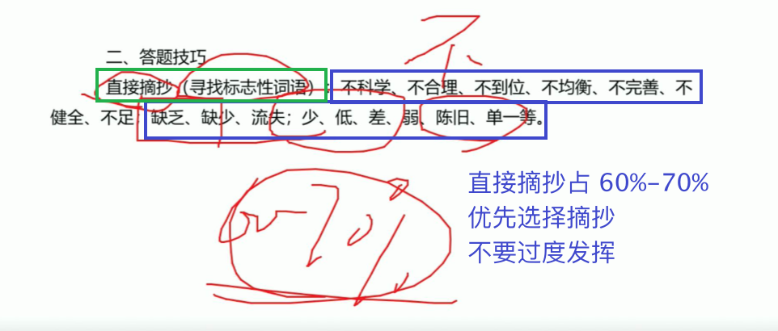
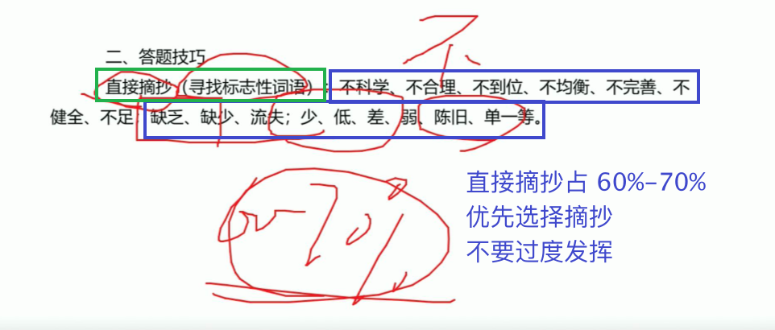
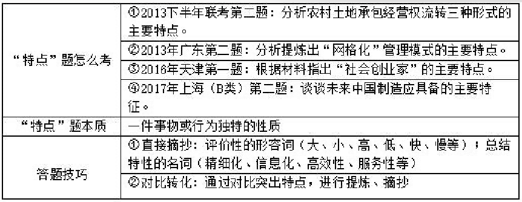
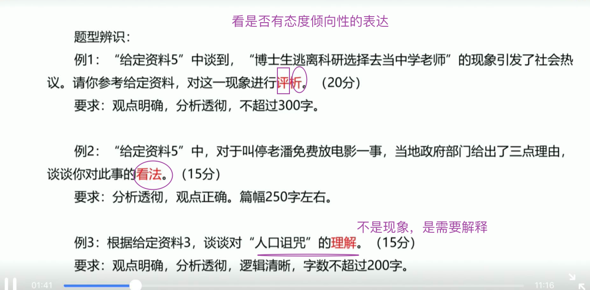
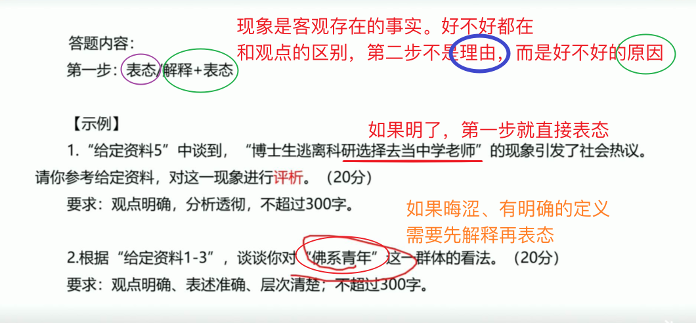
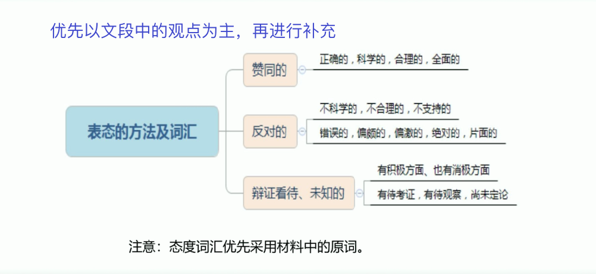

任重道远者，不择地而息；家贫亲老者，不择官而仕。（《韩诗外传》）
任重道远者，不择地而息；家贫亲老者，不择官而仕。（《韩诗外传》）
听了一些课，却不知道从何下手！
粉笔的训练营走起！
基础知识
申论是测查从事机关工作应当具备的基本能力
客观性：全面把握给定资料的内容，准确理解给定资料的含义。尊重材料、不要随意主观发挥
准确性：
- 符合题干
- 必须表述规范，明白&简短。
- 发现和界定问题：要寻找问题；负面、不好的事情
- 方案或措施：对策、做法。能摘抄则摘抄，要不就自行归纳
要求熟练使用指定的语种<简体汉语>，运用 说明、陈述、议论等方式，准确规范、简明畅达的表达思想观点。
题型分类
题型一： 单一题
特征：指向明确 种类少。要素
答题要素：问题、原因、影响<意义、危害>、对策<措施>等
题型二：综合题
特点：要素不明确
答题类型
- 分层次<多要素>
- 按点<词>赋分、关键词
如：结合材料，对”人口诅咒“，作一全面解释
题型三：公文题
特点：量词+文种
答题：
- 格式分
- 语言分
- 内容分：多要素+关键词
题型四：大作文
特点：议论文
答题：
- 内容客观<基于材料>；
- 文章结构赋分<议论文>；
- 语言赋分；
- 材料外的事例；
答题步骤
审题
审—作答范围
- 根据、依据、结合、阅读给定材料 X，限定范围
- 材料 X 中提到了。；重点在 X，还要兼顾全部材料
审–主题&结构
- 牢记主题，快速锁定材料，忽略不想干的主题；组织答案
- 结构：预判答案内容；整合答案
审–要求
- 准确：要点来自材料，尽量用材料的原词原句；归纳
- 全面：宁滥勿缺
- 简明：去掉修饰词，避免同义反复，言简意赅
- 有条理：分条撰写，标注序号；
答题要素 || 单一题
问题
总览
- 命题的方式：主题<如：经济发展、民生>+要素<问题、不足、困境等>
- 侧重：主题相关、准确
- 三个方向
- 直接摘抄。不字辈；
- 归纳总结，合成、简化；
- 分析推导。
- 尊重原意。
 
意义
措施
原因
正面
答题技巧总结
Tips1：哲学告诉我们，事物是由主客观、内外因共同决定的，所以同学们在找寻原因题目的答案时，不光要找寻现象本身的主观原因，对于材料中出现的背景信息等也要予以格外关注，因为它很可能是事物发展变化的客观原因。
Tips2：成功原因的答案要素主要来源于三个部分：
- 关注“因为……”“由于……”“之所以……是因为……”等表因果关系的关联词。
- 关注现象本身的主动作为，因为要想成功，现象本身势必做了不少努力，所以在材料中找寻现象本身的做法，也是答题的一个要点。
- 关注现象作为后的积极意义，现象作为后给受众群体带来了诸多好处，受众的认可说明现象是成功的。
示例
下面我们截取了“根据给定资料，分析 H 企业发展成功的原因”中的两段材料，具体阐述一下上面的答题技巧如何运用到材料中。
解析
材料剖析：
我们看到在这一段落中，“互联网的风起云涌，不仅从根本上颠覆了许多传统行业，同时也创造了新的行业和机遇”，这是 H 企业应用物联网，开发洗衣 APP 的客观条件，构成了我们 H 企业成功的外因，提炼要点 1：互联网的发展，为企业提供机遇。
段 2：由于有着对中国当代大学生的长期观察和了解，该品牌依托物联网打造出这一创新模式。供求双方通过互联网发布自己可供分享或需求的物品，不仅能为特定的供给者或需求者提供可选择的交易对象，还有助于掌握交易对象更多的信息。当这种自助洗衣设备一入驻 R 市大学城，就受到了大学生们的喜爱。课间查看空余机位，一键下单，然后手机支付，该品牌洗衣逐渐成为大学生校园生活中的一部分。该校一名学生告诉记者：“自从学校有了这种自助洗衣设备，之前排队洗衣的时间可以用在逛书店和学习上了。现在我们宿舍的六个室友，每人都装了洗衣 APP，给我们带来了很多便利。”
材料剖析：
“由于有着对中国当代大学生的长期观察和了解，该品牌依托物联网打造出这一创新模式。”“由于”是典型表述因果关系的关联词，其后引导的句子需要重点关注，“由于有着对中国当代大学生的长期观察和了解”是 H 企业成功的原因，提炼要点 2：长期观察了解目标群体。
“该品牌依托物联网打造出这一创新模式”属于做法，是 H 企业成功的原因，提炼要点 3：依托物联网发展、打造创新模式。这里需要注意的是：按照申论答案表意明确清晰的原则，如果答案中写的是打造创新模式，其实并不知道这创新模式到底创新在何处，或者这个创新模式具体是什么，我们应该把创新模式到底是什么写在答案中，接着阅读材料。“供求双方通过互联网发布自己可供分享或需求的物品，不仅能为特定的供给者或需求者提供可选择的交易对象，还有助于掌握交易对象更多的信息。”这句材料是对创新模式的具体解释，告诉了我们 H 企业到底是怎么做的，这才是 H 企业的具体做法，也是它成功的原因，提炼要点 4：通过互联网发布物品，为供求双方提供可选择的交易对象以及相关信息。
在段落的后半部分，该校一名学生告诉记者：“自从学校有了这种自助洗衣设备，之前排队洗衣的时间可以用在逛书店和学习上了。现在我们宿舍的六个室友，每人都装了洗衣 APP，给我们带来了很多便利。”这句话从用户角度说出了 H 企业投放自主洗衣设备，给他们节约了时间，带来了便利，这是 H 企业主动作为的积极意义，属于 H 企业成功的原因，提炼要点 5：方便快捷，节省用户时间。
答案要点：
1、互联网的发展，为企业提供机遇。（tips1：外在环境，客观原因）
2、长期观察了解目标群体。（tips2-1：因果关联词引导的句子）
3、依托物联网发展。（tips2-2：企业的做法）
4、通过互联网发布物品，为供求双方提供可选择的交易对象以及相关信息。（tips2-2：企业的做法）
5、方便快捷，节省用户时间。（tips2-3：企业做法带来的积极意义）

其他类
有些题目 “长相特殊” “问法奇怪”，但是终归是考察申论的基本能力与基本方法
 变化
特点就是描述某个事物或某个行为所具有的特别或特殊之处的信息；
概括的时候可以借用一些表达性质的词语去描述事物或行为。
两种：
- 常见的 好、坏、美、丑带有评价的形容词
- 形容词的变形，性、化等表形容的名词，精细化、科技化、系统性
[待积累补充]：规范词汇
综合题
观点分析
分析
现象分析类
分析
现象分析题： 针对现象进行分析评价的题目。
对。.. 现象。.. 见解/看法/认识/评价等
第一步：表述观点
第二步： 原因：
原因 从问题、危害、意义、事例等方面展开
🤔️为啥是原因而不是理由🤔️
- 因为现象类是客观存在的，不应该说好或不好的理由，而是造成好不好的原因。是两个概念。
- 事例： 如果是围绕主题的，可以作为支持主题的原因，需要自己概括
第三步：答题步骤
对这一现象进行评析表态+分析理由（综合考虑问题、危害、意义、事例等，资料中涉及几个就写几个）+总结评价（一般为对策）
🤔️为何写那么多不得分？
分为以下几个方面
为啥总是想要自己概括呢！！！
三步走
- 除了考虑： 合理、不合理，辩证看待 以外，还可以从 说话人的角度 摘抄、归纳
- 原因还是要 来源材料、来源材料 总是想要自己概括，牢记二八定律，先摘抄
- 对策，需要进一步积累规范词汇、多看多看
这是人家的三步走
理由有很多，已经分不清楚，现象的理由和原因的区别了
对这一现象进行评析表态+分析理由（综合考虑问题、危害、意义、事例等，资料中涉及几个就写几个）+总结评价（一般为对策）
题目
答案
词汇解释题
基本信息
题型特征
谈。.. 词的含义；对。.. 词进行解释；谈对。.. 词的理解
不能只说表面的意思，如：地中海可以漂浮起来的海。—0 分
要解释深层含义。词汇附近找
一道题几十分，即便含义有 30 个字，也对不起分数，所以需要针对 词意 进行扩展。
解题思路
感情色彩与答案相同
相关要素<问题、危害、意义、事例等>；
需要从 词意 的 正负面，去找
- 好的就找好的；意义
- 坏的就找坏的。问题、危害
对策
- 有对策就直接抄
- 没有就总结。
事例-本领恐慌
答案一
本领恐慌是指担心自己不能保质保量、按时按点地完成工作任务。
造成这样的原因主要是自身知识水平低，工作中难以创新；工作压力大，所要处理的问题多；缺乏实践经验。
针对这种问题我们要努力学习，长本领，理论联系实践，在实践中进步。
答案二
究其原因：1. 外界环境方面：基层矛盾集中，群众利益诉求多元化、复杂化。2. 基层干部自身：知识水平低，创新能力不足；基层工作经验少，缺乏解决实际问题的能力。
为此，基层干部要注重工作实践中学习知识本领。
答案三
结合本题，首先题干中“本领恐慌”的表意不够明确，可能需要结合资料解释其含义；
其次，由“本领恐慌”这一负面词汇可以推测答案可能涉及问题、原因、危害等要素；
最后，可就如何解决“本领恐慌”给出对策，具体结合资料而定。
- 阅读段 1，尾处“……这实际上是个‘本领恐慌’的问题”提示前边讲述的是“本领恐慌”的含义，其中“这”指代前文“有些干部在工作中缺乏‘发展之招’……总担心自己不能保质保量、按时按点地完成工作任务”，由首句中“基层干部要不断提升能力素质、更新自身的知识结构才能解决好发展中的新问题”可知，“有些干部在工作中缺乏‘发展之招’”指的是基层干部自身能力素质、知识结构滞后于发展需要。因此，可整合得出“本领恐慌”的含义：“本领恐慌”指基层干部因自身能力素质、知识结构滞后于发展需要，不能有效完成工作而产生的一种不安情绪。
- 段 2 中转折关联词“但”引导的句子“但自己知识水平低，在工作中没有新思路、新模式、新方法……种蔬菜大棚”指出了干部“羞愧难当”的原因，其中“工作中没有新思路、新模式、新方法”可概括为：创新能力不足。由此可以得出“本领恐慌”的原因：基层干部知识水平低，创新能力不足。
- 阅读段 3，（1）段首处的句子“基层干部与群众直接接触，往往处在各种矛盾的中心地带，基层干部普遍感到压力大”，指出了基层干部“本领恐慌”的原因，可直接摘抄出要点：基层矛盾集中。（2）段尾处的句子“遇到问题，群众首先想到的都是找我们来解决。发展到现在，我们除了要协调……各方利益诉求，还要操心……等各种各样的事情”，指出群众利益诉求变得复杂、多元，让基层干部压力大，由此可概括得出“本领恐慌”的原因：群众利益诉求多元化、复杂化。 [规范词]
- 阅读段 4，负面信息“他发现这工作和想象中的完全不一样……真到了与搬迁户面对面，他却无能为力，让小王‘慌了神’”，提示“本领恐慌”的原因，可概括为：基层工作经验少，缺乏解决实际问题的能力。 [规范词]
- 阅读段 5 首处的句子“克服‘本领恐慌’，需要长知识、增本领，这就需要基层干部在‘学’字上下功夫”，指出基层干部要学习知识、本领。“广阔的工作实践是一所没有边界的学校”
指出应在实践中不断学习、历练。由此可得出应对“本领恐慌”的对策：基层干部要注重工作实践中学习知识本领。
综上，可得出答案要点：
“本领恐慌”指基层干部因自身能力素质、知识结构滞后于发展需要，不能有效完成工作而产生的一种不安情绪。
究其原因：1. 外界环境方面：基层矛盾集中，群众利益诉求多元化、复杂化。2. 基层干部自身：知识水平低，创新能力不足；基层工作经验少，缺乏解决实际问题的能力。
为此，基层干部要注重工作实践中学习知识本领。
得分少的原因
- 解释的不好，首先是个完整的句子，来源材料的定义，但是也要总结、规范。主题+原因+现象；
- 啰嗦&占字数：学习：
- 究其原因 代替
产生这样的现象的原因是： - 为此 代替
针对这种问题我们要
- 究其原因 代替
- 没有分条罗列，总结。
句子解释题
（1）长短有度。当我们掌握“三步走”之后，对每一步所占篇幅要有个明确认知，即释义短一些，相关要素长一些，总结评价再短一些。
（2）合理布局。这三步不一定都能找到，因此语言的衔接要自然温柔，可以简单背诵一个小“模版”，……是指，导致（由于）……，应该（因此）……。
句子解释
事例
“要避免在垃圾堆上数钞票”
- 读题，预构问题，环境相关的
- 污染的危害
- 有可能还有治理的措施、意义
答案对比
综合题中的句子解释题是考试中的重点，相比词语解释题，句子更长，含义更丰富，涉及要素更多，有些句子还可能晦涩难懂。
第一步 释义
就近原则，在句子的附近位置找解释，一般有专家、权威观点和总结句，这时候需要我们重点去读、去理解。
如果就近位置没有，则需要我们结合句子的上下文进行总结。
有的句子中会出现较为抽象的词，或者对句子起到关键作用的词，此时，我们在释义环节可以先解释其中的核心词汇，再解释句子。
示例
【2018 年 云南】根据材料，谈谈你对其中划线部分“各个地方的人才引进工作，必须要‘错位’又‘对位’”的理解。
参考答案：
“错位”指人才引进要错落有致，差异化“对位”指要结合当地的实际情况引进人才。（释义部分）
题目分析：
（1）判断题型。出现“谈谈你对……理解”，题型为词句解释题。
（2）理顺思路，方法运用。确定题型之后，第一步需要对句子进行解释，即解释人才引进工作中“错位”“对位”的含义，可以分别解释什么是人才引进的“错位”以及“对位”。
第二步 相关要素
综合题得分率低的主要原因就是“相关要素”这一步没有做好，因为句子含义比较模糊，回答的内容不清晰，作答要素也相对较多，致使同学们难以针对性作答，那么我们看一下到底怎么答好相关要素呢？
给我们一个句子，我们不能只下定义、做解释，还要分析为什么会出现这个句子，把围绕着句子的相关要素要安排的明明白白。当然不是所有要素都要回答，可以利用我们之前讲过的一个小技巧——“感情色彩”法，以此预判答题的侧重点。如果句子的感情色彩是积极的，侧重于答意义；如果是消极的，侧重于答原因、危害等；如果句子中涉及的感情色彩既有积极的，也有消极的，答案也应该包含两个方面，大家要全面考虑。需要注意的是，一般单一题中可忽略例子，但是在综合题中例子也是得分点，一般例子和主题直接相关，且较大篇幅介绍一个例子，这时一定是重点强调，写为“如 XX”即可，一般一个例子 1-2 分。相关要素（问题、危害、意义、事例等）的环节分数比较高，要素最难、最多、最杂，一定要全面掌握。
参考答案：
遮蔽是指被现实、自我、技术、金钱迷惑，不能全面、真实揭示时代精神的错误文艺创作行为。【释义】
具体为：
一、被现实遮蔽，掩盖历史，创作娱乐化，对时代命运缺乏严肃思考。
二、被自我遮蔽，对他人缺少同情，对人民生活缺少感知力。
三、被技术遮蔽，沉迷虚拟世界，无视现实生活、社会实践。
四、被城市金钱物质遮蔽，对农村缺少认识，对精神缺乏关注。【1-4 为相关要素】
题目分析：
（1）判断题型。看到“对……理解”，确定此题为词句解释题。
（2）理顺作答思路，方法运用。分三步走，释义+分析相关要素+总结评价。通过感情色彩判断“遮蔽”为负面表述，所以“分析相关要素”部分可能会重点涉及“问题、危害、原因”等，因此答案中的相关要素部分问题、危害较多。
第三步 总结评价
一般来说对策的分值不太高，有空格就写，该抄就抄该总结就总结。
比较
概念
答案对比
问题汇总
分数低的几个原因
- 找到点，不知道抄多还是少
- 总是过度引申
- 写的时候，不知道格式是啥、怎么个分结构法，概念不明。
- 规范词也不够
其他类型
概念
6.5 分
概念
自己的总结
对比
公文题
概念
注意
方案类
按目的分类
方案类公文正文内容通常包括三个部分：开头、主体和结尾。
开头可以写背景式、根据式、目的/意义式。
- 背景式：近日出现了……问题，提出如下对策。
- 根据式：根据材料里政策、理论、会议精神提出对策。
- 目的/意义式：为了达到……目的；为了让……发挥作用，现提出如下对策。
以上三种都是方案类公文的常见开头方式，具体写什么，要根据材料而定。如果材料中包含背景、根据、目的/意义，均可写出。
例如“近日出现……问题，现根据……法，为了达到……目的，现提出如下对策”，各位考生灵活处理即可。
主体部分主要是提对策，对策占据大部分篇幅，而答案来源有三种方式：摘抄、借鉴、推导。
- 抄：看见标志性动词，例如“需要、应该、设置、建立”等，可以直接摘抄。
- 借：其他国家、地区出现好的做法，也可以借鉴。
- 推：没有直接摘抄的对策，并且借鉴得出的对策不够多，那么可以根据题干、材料中的问题进行反推。
都写上就行了
最后是结尾部分，这部分内容可以根据字数来确定，可写可不写。如果格子比较充裕，结尾部分可以写上：以上建议请有关部门重视、以上建议请各领导部门审阅等。
我们实际操作中需要在结尾加上：以上建议请领导审阅、以上意见请各上级部门参阅或者以上建议请相关部门批示等表述。
故当要求中出现“建议口吻”，这里的结尾就不能省略，而一定要有一句体现建议口吻的结尾。
宣传类
概念
第一部分：开头。主要包括行文的背景和目的。
第二部分：劝服。起劝服作用，可能包括：问题、危害、意义等要素。
第三部分：倡议。主要写对策。
第四部分：结尾。可以升华主题、发出呼吁号召。
- 开头。交代发文事由，告诉读者为什么发文，可能是某个背景、目的。
具体写“背景”还是“目的”要根据材料来判断，材料中有“目的”就写“目的”，材料中有“背景”就写“背景”。如果材料中既有“背景”又有“目的”，字数充足的话，可以都写上。 - 劝服。进行劝解，采用“动之以情，晓之以理”的思路。之所以倡导大家这样去做，可能是因为做了之后会带来好处，没做到会有危害等等。
具体落笔成文依然是遵照材料逻辑侧重。 - 倡议。宣传类公文的主旨就是号召大家做什么、怎么做。所以这部分侧重落实行动、给出对策。
- 结尾。主要是升华宣传主题，呼吁号召落实做法。呼吁号召有两种写法，根据材料而定：
- ①如果材料中有关于呼吁号召的内容，可以直接摘抄。
- ②如果材料中没有这类呼吁性词汇，可以号召大家一起参加。
变形
概念
总结类
概念

评论类
概念
大作文
基础概念
概念

审题
审题–指向明确型
概念
审题–指向关系型
概念
审题–指向多元型
概念
框架
提炼观点
观点
观点的来源
- 题干：主题词
- 材料：要素、观点。
材料的阅读顺序
- 优先阅读：指定材料、小题没有涉及的材料、权威材料
- 关照全篇：结合小题(题干、答案)、浏览全篇。
提炼观点的方法
- 直接摘抄
- 归纳概括
- 分析推导
- 本文链接： https://simuty.com/2020/06/10/civil_servant_composition_1/
- 版权声明： 本博客所有文章除特别声明外，均采用 BY-NC-SA 许可协议。转载请注明出处！